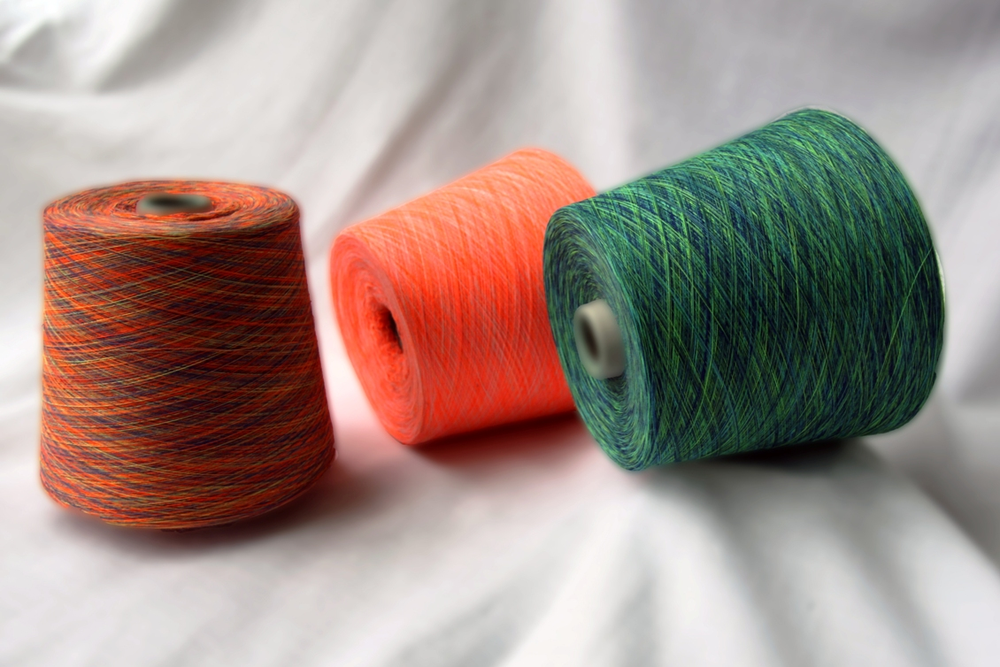
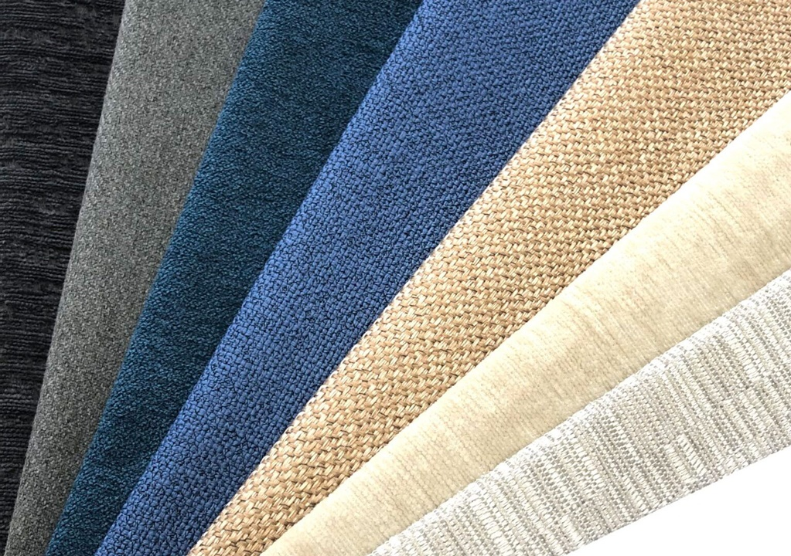

Dokuma kumaş,iki ipliğin dokuma örgüsüne ve belli bir sistemle birbirlerine dik bir açı ile bağlanmaları şeklinde oluşturulan kumaşlara denir.

Dokuma İplik

Örme İplik
Örme kumaş üretimi kapsamında pek çok farklı şekil üzerinden ele alınarak hazırlanan bilmektedir. Genel olarak örme kumaş; ipliklerin tek ya da topluca beslenmesi ile beraber iğne veya örücü elemanların yardımı eşliğinde ipliklere ilmek formu kazandırılması üzerinden hazırlanmaktadır.

Döşemelik Kumaş
Döşemelik kumaş, bazı yöntemlerle dokunmuş, dokunmamış veya örülmüş olarak üretilen, polyester, yün, akrilik gibi tekstil liflerinin sıklıkla kullanıldığı mobilya tekstili, araba koltukları, ev ürünleri gibi yerlerde kullanımı olan bir çeşit kumaştır